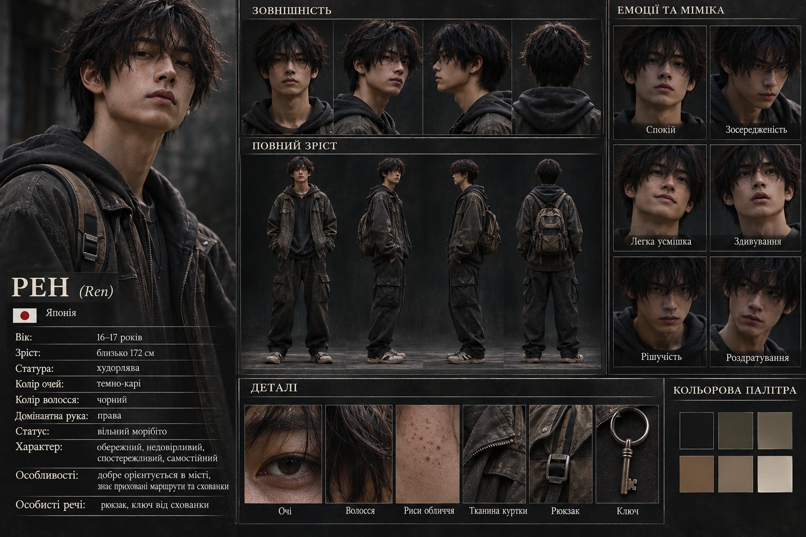

ЗАТВЕРДЖЕНИЙ ВІЗУАЛЬНИЙ ОБРАЗ
Зовнішність
Рен — юнак із Японії, віком приблизно 16–17 років. На візуальній картці він зображений зі скуйовдженим чорним волоссям, темно-карими очима та худорлявою статурою. Його зріст — близько 172 см. Одягнений у темну куртку з капюшоном, має рюкзак.
Ім’я: Рен (Ren)
Походження: Японія
Вік: 16–17 років
Зріст: близько 172 см
Статура: худорлява
Очі: темно-карі
Волосся: чорне
Домінантна рука: права
Статус: вільний морібіто
ХАРАКТЕР І ОСОБЛИВОСТІ
Знає місто та його таємні шляхи
Рен обережний, недовірливий, спостережливий і самостійний. Він добре орієнтується в місті, знає приховані маршрути та схованки.
На візуальній картці серед його особистих речей зазначені рюкзак і ключ від схованки. Інші здібності та біографічні подробиці тут не додаються, оскільки вони не підтверджені наданим матеріалом.